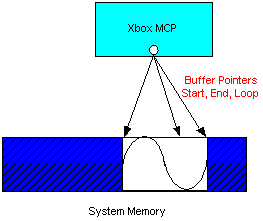
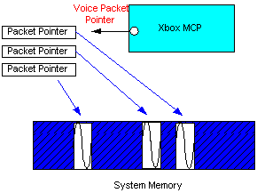

The DirectSound title library provides software for low-level control of the audio hardware for the Xbox. In most cases, a DirectSound method call results in direct control of the audio hardware registers. DirectSound is typically used where games desire the highest level of program control over audio implementation.
DirectSound provides access to all the functions of the voice processor pipeline (filters, low frequency oscillators [LFOs], envelopes) as well as 3D control and Head Relative Transfer Function (HRTF) processing. DirectSound is also used to load DSP programs into the Global Processor (GP) and control the overall flow of the audio data.
DirectSound can automatically generate HRTF and multi-speaker values by using its 3D audio method. Each sound source may be given a 3D value in standard (x,y,z) space. DirectSound also defines a DirectSound 3D listener which specifies the location and orientation of the sound receiver. In most cases, sound sources are tied to visual objects (whether or not they happen to be visible on the screen at any given time), while the DirectSound 3D listener is set to the game player's viewpoint. DirectSound also allows an application to specify other parameters useful for simulating sound fields such as Doppler shift and apparent speed of sound as well as sound cone radiation.
Access to the audio hardware is provided by DirectSound buffers and DirectSound streams.
DirectSound buffers represent areas of system memory that can be accessed by the Xbox Media Communications Processor (MCP). This makes DirectSound buffers especially suitable for short sound effects and musical instrument sounds that can easily fit into a small amount of memory. DirectSound buffers expose all of the features of the voice pipeline, including SRC, looping, filtering, mixing, and other processing.
The following diagram is a representation of a DirectSound buffer.

DirectSound streams allow an application to stream data into the Xbox MCP on a packet basis.
The following diagram is a representation of a DirectSound stream.

This section covers managing the memory used by DirectSound buffers and streams.
A maximum of 16 MB of audio data can be accessed (physically allocated at any one moment) at any given time (buffers and streams combined). This doesn't affect the number of DirectSound buffers or DirectSound streams that can be created.
DirectSound buffers are managed in a scatter gather entry (SGE) list. There is a maximum of 2,047 SGEs, which each point to a 4-KB page. This means that a maximum of 8 MB are available for allocating or playing DirectSound buffers simultaneously. Attempting to allocate/play more than the maximum will result in the following error message:
DSOUND: CMcpxBuffer::MapInputBuffer: Resource failure: Out of scatter/gather entries.
Either your buffer is too big, or too many buffers have been mapped at one time.
Because of restrictions in the hardware, a voice may still be playing after calling IDirectSoundBuffer8::Stop or IDirectSoundBuffer8::StopEx. Before freeing memory allocated for the buffer, you must make sure that the buffer has stopped playing in one of the following ways:
Of the three methods, the first method, polling GetStatus, is probably the best way, because it allows the title more control of what is going on. The following code is an example:
DWORD dwStatus;
pDSBuffer->StopEx( 0, DSBSTOPEX_IMMEDIATE );
do
{
pDSBuffer->GetStatus( &dwStatus );
} while( dwStatus & DSBSTATUS_PLAYING );
This ensures that it is safe to free memory allocated for the buffer.